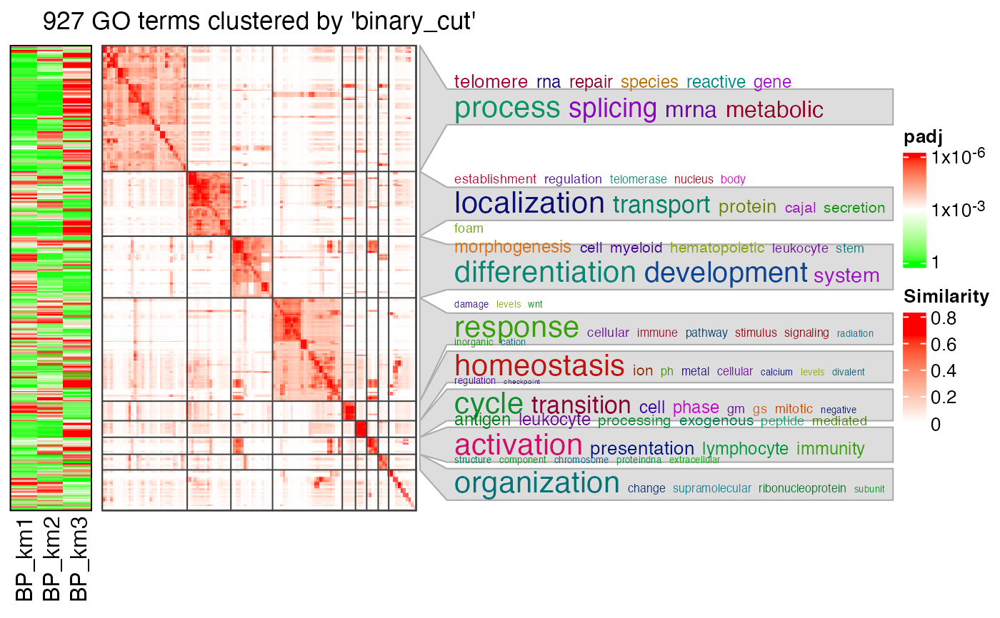
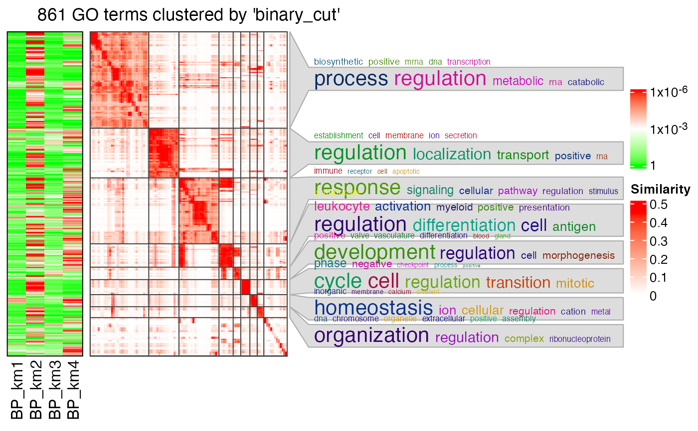
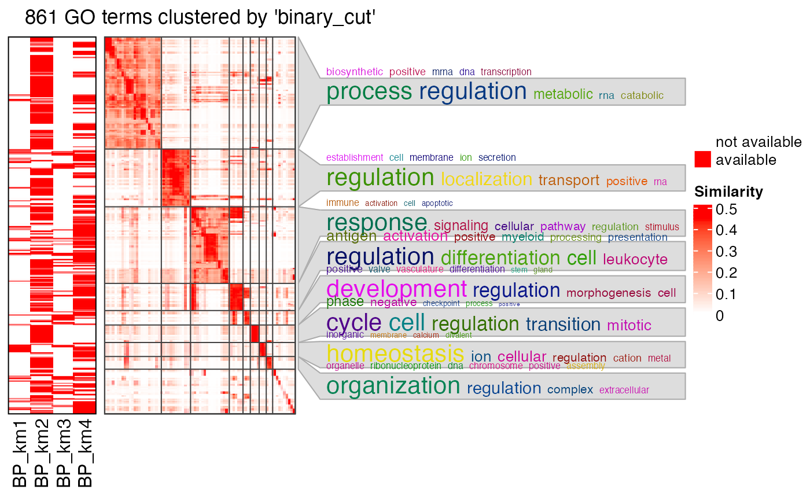

simplifyGOFromMultipleLists.RdPerform simplifyGO analysis with multiple lists of GO IDs
simplifyGOFromMultipleLists(lt, go_id_column = NULL,
padj_column = NULL, padj_cutoff = 1e-2,
filter = function(x) any(x < padj_cutoff), default = 1,
ont = NULL, db = 'org.Hs.eg.db', measure = "Rel",
heatmap_param = list(NULL), show_barplot = TRUE,
method = "binary_cut", control = list(),
min_term = NULL, verbose = TRUE, column_title = NULL, ...)A data frame, a list of numeric vectors (e.g. adjusted p-values) where each numeric vector has GO IDs as names, or a list of GO IDs.
Column index of GO ID if lt contains a list of data frames.
Column index of adjusted p-values if lt contains a list of data frames.
Cut off for adjusted p-values
A self-defined function for filtering GO IDs. By default it requires GO IDs should be significant in at least one list.
The default value for the adjusted p-values. See Details.
GO ontology. Value should be one of "BP", "CC" or "MF". If it is not specified, the function automatically identifies it by random sampling 10 IDs from go_id (see guess_ont).
Annotation database. It should be from https://bioconductor.org/packages/3.10/BiocViews.html#___OrgDb
Semantic measure for the GO similarity, pass to termSim.
Parameters for controlling the heatmap, see Details.
Whether draw barplots which shows numbers of significant GO terms in clusters.
Pass to simplifyGO.
Pass to simplifyGO.
Pass to simplifyGO.
Pass to simplifyGO.
Pass to simplifyGO.
Pass to simplifyGO.
The input data can have three types of formats:
A list of numeric vectors of adjusted p-values where each vector has the GO IDs as names.
A data frame. The column of the GO IDs can be specified with go_id_column argument and the column of the adjusted p-values can be specified with padj_column argument. If these columns are not specified, they are automatically identified. The GO ID column is found by checking whether a column contains all GO IDs. The adjusted p-value column is found by comparing the column names of the data frame to see whether it might be a column for adjusted p-values. These two columns are used to construct a numeric vector with GO IDs as names.
A list of character vectors of GO IDs. In this case, each character vector is changed to a numeric vector where all values take 1 and the original GO IDs are used as names of the vector.
Now let's assume there are n GO lists, we first construct a global matrix where columns correspond to the n GO lists and rows correspond
to the "union" of all GO IDs in the lists. The value for the ith GO ID and in the jth list are taken from the corresponding numeric vector
in lt. If the jth vector in lt does not contain the ith GO ID, the value defined by default argument is taken there (e.g. in most cases the numeric
values are adjusted p-values, default is set to 1). Let's call this matrix as M0.
Next step is to filter M0 so that we only take a subset of GO IDs of interest. We define a proper function via argument filter to remove
GO IDs that are not important for the analysis. Functions for filter is applied to every row in M0 and filter function needs
to return a logical value to decide whether to remove the current GO ID. For example, if the values in lt are adjusted p-values, the filter function
can be set as function(x) any(x < padj_cutoff) so that the GO ID is kept as long as it is signfiicant in at least one list. After the filter, let's call
the filtered matrix M1.
GO IDs in M1 (row names of M1) are used for clustering. A heatmap of M1 is attached to the left of the GO similarity heatmap so that
the group-specific (or list-specific) patterns can be easily observed and to corresponded to GO functions.
Argument heatmap_param controls several parameters for heatmap M1:
transform: A self-defined function to transform the data for heatmap visualization. The most typical case is to transform adjusted p-values by -log10(x).
breaks: break values for color interpolation.
col: The corresponding values for breaks.
labels: The corresponding labels.
name: Legend title.
# \donttest{
# perform functional enrichment on the signatures genes from cola anlaysis
require(cola)
#> Loading required package: cola
#> ========================================
#> cola version 2.3.1
#> Bioconductor page: http://bioconductor.org/packages/cola/
#> Github page: https://github.com/jokergoo/cola
#> Documentation: https://jokergoo.github.io/cola/
#> Examples: https://jokergoo.github.io/cola_collection/
#>
#> If you use it in published research, please cite:
#> Gu, Z. cola: an R/Bioconductor package for consensus partitioning
#> through a general framework. Nucleic Acids Research 2021.
#>
#> This message can be suppressed by:
#> suppressPackageStartupMessages(library(cola))
#> ========================================
data(golub_cola)
res = golub_cola["ATC:skmeans"]
require(hu6800.db)
#> Loading required package: hu6800.db
#> Loading required package: AnnotationDbi
#> Loading required package: stats4
#> Loading required package: Biobase
#> Welcome to Bioconductor
#>
#> Vignettes contain introductory material; view with
#> 'browseVignettes()'. To cite Bioconductor, see
#> 'citation("Biobase")', and for packages 'citation("pkgname")'.
#> Loading required package: IRanges
#> Loading required package: S4Vectors
#>
#> Attaching package: ‘S4Vectors’
#> The following objects are masked from ‘package:base’:
#>
#> I, expand.grid, unname
#> Loading required package: org.Hs.eg.db
#>
x = hu6800ENTREZID
mapped_probes = mappedkeys(x)
id_mapping = unlist(as.list(x[mapped_probes]))
lt = functional_enrichment(res, k = 3, id_mapping = id_mapping) # you can check the value of `lt`
#> - 2050/4116 significant genes are taken from 3-group comparisons
#> - on k-means group 1/3, 827 genes
#> - 651/827 (78.7%) genes left after id mapping
#> - gene set enrichment, GO:BP
#> - on k-means group 2/3, 359 genes
#> - 317/359 (88.3%) genes left after id mapping
#> - gene set enrichment, GO:BP
#> - on k-means group 3/3, 864 genes
#> - 786/864 (91%) genes left after id mapping
#> - gene set enrichment, GO:BP
# a list of data frames
simplifyGOFromMultipleLists(lt, padj_cutoff = 0.001)
#> Use column 'ID' as `go_id_column`.
#> Use column 'p.adjust' as `padj_column`.
#> Loading required namespace: gridtext
#> 807/6322 GO IDs left for clustering.
#> You haven't provided value for `ont`, guess it as `BP`.
#> Cluster 807 terms by 'binary_cut'...
#> 25 clusters, used 2.168275 secs.
#> Perform keywords enrichment for 8 GO lists...

# a list of numeric values
lt2 = lapply(lt, function(x) structure(x$p.adjust, names = x$ID))
simplifyGOFromMultipleLists(lt2, padj_cutoff = 0.001)
#> 807/6322 GO IDs left for clustering.
#> You haven't provided value for `ont`, guess it as `BP`.
#> Cluster 807 terms by 'binary_cut'...
#> 25 clusters, used 2.151761 secs.
#> Perform keywords enrichment for 8 GO lists...

# a list of GO IDS
lt3 = lapply(lt, function(x) x$ID[x$p.adjust < 0.001])
simplifyGOFromMultipleLists(lt3)
#> 807/807 GO IDs left for clustering.
#> You haven't provided value for `ont`, guess it as `BP`.
#> Cluster 807 terms by 'binary_cut'...
#> 25 clusters, used 2.057261 secs.
#> Perform keywords enrichment for 8 GO lists...

# }